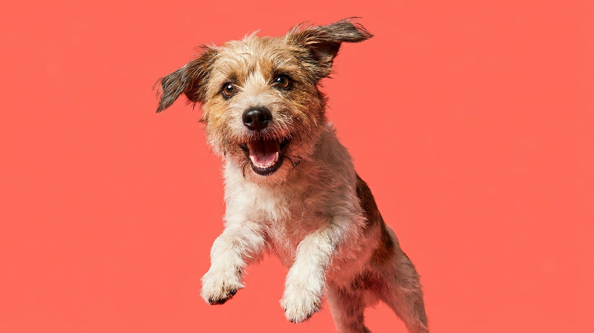

Кошки и собаки скрывают недомогание: это инстинкт. К врачу питомец попадает тогда, когда изменения уже очевидны, хотя первые сигналы появились недели назад. Пять минут раз в неделю по одному и тому же маршруту (с носа до хвоста) позволяют заметить отклонение до того, как оно станет проблемой. Ниже чек-лист из восьми точек: что смотреть и когда не откладывать визит.
🐾 Проверьте своего питомца, пока помните
Откройте AnimaLife, опишите, что беспокоит, — получите разбор и понятный план действий. Ответ за минуту, бесплатно и без очередей.
Спросить AI-ветеринара → Спросить в MAX →
У вас iPhone? AnimaLife есть в App Store
Однократный осмотр даёт срез. Регулярный даёт динамику. Ветеринар видит питомца раз в год и оценивает его состояние здесь и сейчас. Вы видите его каждый день и можете сравнить с тем, что было неделю назад. Именно это сравнение, главный инструмент профилактики для владельца. Не нужно знать медицину: достаточно замечать, что изменилось.
Маршрут лучше делать одинаковым каждый раз: нос, глаза, уши, рот, кожа и шерсть, живот, лапы и когти, затем поведение и аппетит за неделю. Привычный порядок снижает вероятность что-то пропустить.
Ряд сигналов требует обращения к ветеринару раньше, чем через неделю:
Эти ситуации не про наблюдение. Здесь нужен врач в тот же день.
Легче всего прикрепить осмотр к уже существующему ритуалу: к расчёсыванию, к игре или к вечернему спокойному контакту. Кошки и собаки воспринимают его спокойнее, когда он регулярный и не связан со стрессом. Пять минут в одно и то же время раз в неделю, и через месяц это уже привычка, а не задача.
Результаты полезно фиксировать: дата, что обратило на себя внимание, что изменилось. На приёме у ветеринара эти заметки помогут точнее описать ситуацию.
🐾 Не уверены, что с питомцем всё в порядке?
Опишите симптом в AnimaLife или пришлите фото — AI-ветеринар за минуту скажет, можно ли наблюдать дома или ехать к врачу сегодня. Бесплатно, круглосуточно, без записи.
Проверить симптом → Проверить в MAX →
У вас iPhone? AnimaLife есть в App Store
🐾 Понравился разбор?
Подпишитесь на канал — каждый день разбираем по одному тревожному симптому у кошек и собак: что в пределах нормы, а когда пора к врачу. Подпишитесь, чтобы не пропустить разбор, который может спасти здоровье вашего питомца.
Материал носит информационный характер и не заменяет очную консультацию ветеринара.